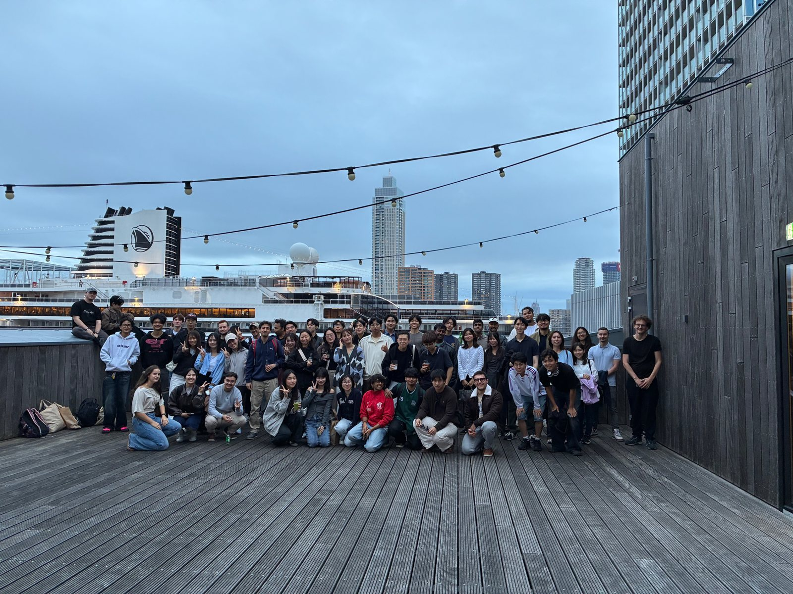

About us
A Place to Meet, Connect, and Belong.
Asian Socials is a welcoming community bringing people together through Asian food, culture, and shared experiences.
Whether you’re new in town or simply looking to meet new people, there’s always a place for you here.

Our Mission
We bring people together through Asian food, culture, and shared experiences.
Our Ambition
To become the most vibrant and welcoming Asian social community in the Netherlands.
What we stand for
Our Values
OPENNESS
Everyone is welcome, regardless of their background or where they come from.
RESPECT
We embrace different perspectives, cultures, and experiences with kindness and understanding.
CONNECTION
We believe meaningful relationships begin with genuine conversations and shared moments.
DISCOVERY
We encourage curiosity, new experiences, and the joy of exploring different cultures together.
Come Solo. Leave Connected.
Don’t know anyone yet? That’s perfectly fine.
Many great friendships start with simply showing up. Find an event that interests you, come as you are, and enjoy meeting new people.
Find Your Next Event